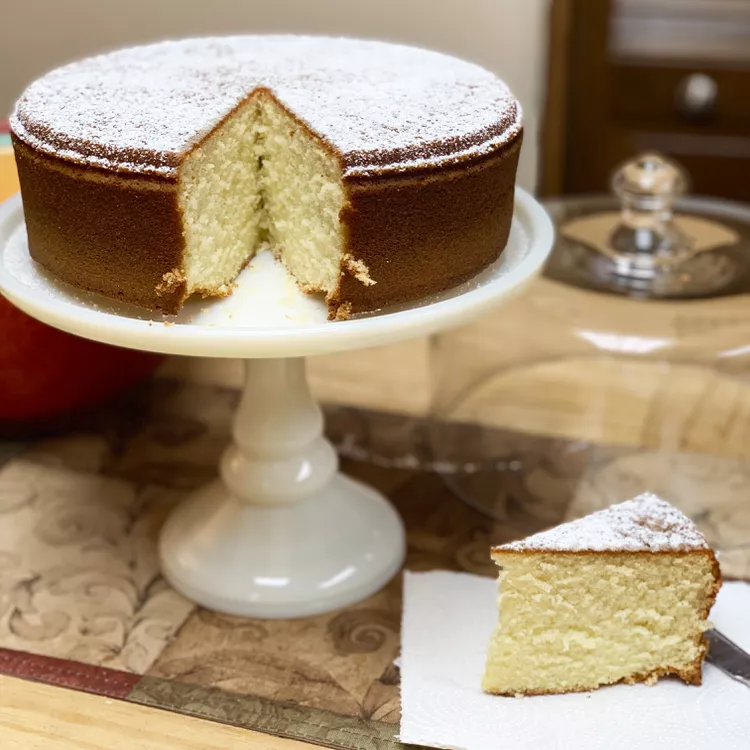

Vaselopita - Greek New Years Cake

Description
Preparation time: 30 minutes
Cook time: 1 hour
Total time: 1 hour, 30 minutes
Servings: 12
Yield: 1 to 10 - inch round
pan
Ingredients
- 1 cup butter
- 2 cups white sugar
- 3 cups all-purpose flour
- 6 eggs
- 2 teaspoons baking powder
- 1 cup warm milk (110 degrees F/45 degrees
C)
- 1/2 teaspoon baking soda
- 1 tablespoon fresh lemon juice
- 1/4 cup blanched slivered almonds
- 2 tablespoons white sugar
Steps
- Preheat oven to 350 degrees F (175 degrees C). Generously grease a 10 inch
round cake pan.
- In a medium bowl, cream the butter and sugar together until light. Stir in the
flour and mix until the mixture is mealy. Add the eggs one at a time, mixing well
after each addition. Combine the baking powder and milk, add to the egg
mixture, mix well. Then combine the lemon juice and baking soda, stir into the
batter. Pour into the prepared cake pan.
- Bake for 20 minutes in the preheated oven. Remove and sprinkle nuts and
sugar over the cake, then return it to the oven for 20 to 30 additional minutes,
until cake springs back to the touch. Gently cut a small hole in the cake and
place a quarter in the hole. Try to cover the hole with sugar. Cool cake on a rack
for 10 minutes before inverting onto a plate.
- Serve cake warm. Each person in the family gets a slice starting with the
youngest. The person who gets the quarter in their piece, gets good luck for the
whole year!